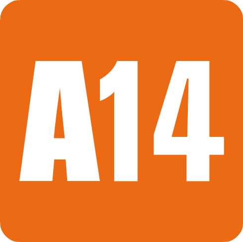

11 de agosto de 2006 No cinema | 1h 44min | Ação, Policial
Direção: Justin Lin
Roteiro: Chris Morgan
Elenco: Lucas Black, Shad Moss, Brian Tee
Título original: The Fast and the Furious : Tokyo Drift


Sean Boswell (Lucas Black) é um adolescente superficial e infeliz, que usa as corridas de rua como válvula de escape. Seu envolvimento irresponsável nas corridas fez com que Sean tivesse problemas com a polícia anteriormente. Após bater com o carro, e como forma de evitar a prisão, Sean é enviado para Tóquio, onde passa a morar com seu pai (Brian Goodman). Em sua nova cidade Sean fica inteiramente deslocado até conhecer Twinkie (Bow Wow), que lhe apresenta as corridas de drift. O drift é uma mistura de derrapagem e velocidade, que corre em circuitos bastante perigosos. Sean logo se empolga com a novidade, o que faz com que se envolva com os corredores locais.
Clique aqui para visualizar a
crítica e o resumo do filme

Clique aqui para assistir o trailer